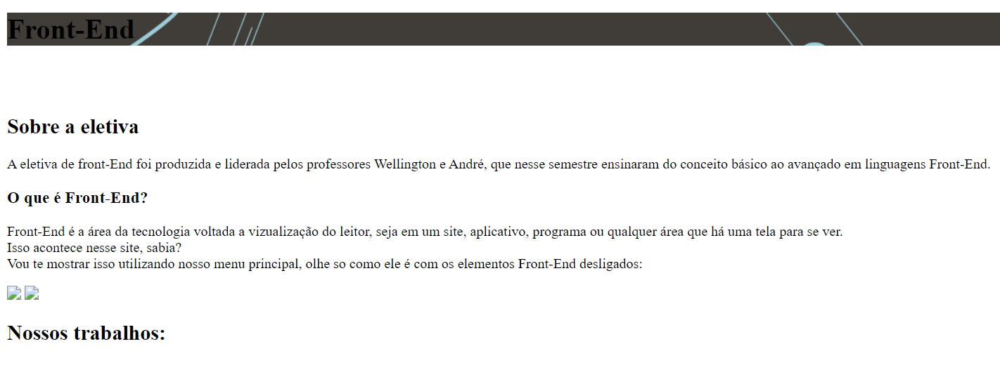

Sobre a eletiva
A eletiva de front-End foi produzida e liderada pelos professores Wellington e André, que nesse semestre ensinaram do conceito básico ao avançado em linguagens Front-End.
A eletiva de front-End foi produzida e liderada pelos professores Wellington e André, que nesse semestre ensinaram do conceito básico ao avançado em linguagens Front-End.
Front-End é a área da tecnologia voltada a vizualização do leitor, seja em um site, aplicativo, programa ou qualquer área que há uma tela para se ver.
Isso acontece nesse site, sabia?
Vou te mostrar isso utilizando nosso menu principal, olhe so como funciona:
Esse é o nosso site (sim, esse que você esta lendo)! Nesta imagem foi utilizado somente o HTML sem as demais linguagens de front end!
Já aqui, mostra o nosso site com os demais elementos Front-End:
Para um site ficar bonito como o nosso, se utiliza o CSS, área propria de estilização de um website ou programa!
O front-End tem como principal três elementos, sendo eles o Html, Css e JavaScript (JS).
aqui falaremos um pouco sobre cada um e suas funcionalidades únicas!

Html é uma abreviação para "Hyper Text Markup Language", em poucas palavras o hmtl forma tudo que é escrito em um website, como títulos, parágrafos, linhas e etc.
Ele possui a funcionalidade de armazenar nossos pensamentos em uma linhagem de código, e ele possui diversas marcações, como:
Atualmente o Html possui um total de 142 tags (caso queira ver todas, acesse o site: w3schools🔗 para saber mais), como visto o html forma a base de seu site e conteúdo, mas nada fica sem estilização, e, quem produz ela é o Css!

Css é a sigla que significa "Cascading Style Sheets", na sua tradução significa "Folhas de Estilo em Cascata", o Css é a linguagem Front-End capaz de estilizar seus itens, seja com cores, fontes, tamanhos e etc, quer ver só? Aqui temos um vídeo que demonstra a estilização de um site!
Olhe só nosso texto interativo abaixo, ele tem como forma a base de html, ao passar e manter o cursor do mouse em cima, você irá ver oque o Css pode fazer para estilizar algo!
Isso que você viu é uma breve demonstração doque o Css pode fazer, e isso acontece em todo o canto do nosso site!

O JavaScript, apelidado carinhosamente como JS, é uma linguagem de programação, onde trás o site de forma mais interativa ao úsuario.
Um website famoso que utiliza 100% de Js é o YouTube, onde tudo no mesmo é interativo a quem usufrui do aplicativo.
A nossa eletiva não tomou como foco a utilização de JS, já que o mesmo demanda uma atenção maior por conta de sua complexidade, com isso dificilmente será visto o uso de Js nos nossos sites.
Na nossa eletiva foram feitos diversos websites, e aqui estão os links para que você possa visitar cada um deles!